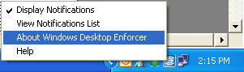

Is this enforcer running?
If all Control Center components are normal, the next step is to confirm that the enforcer you are testing on is running. If you are testing an access policy, this will be a file server enforcer; if you are testing a usage policy, it will be a Windows Desktop Enforcer. In the former case, you will need to know which file server host your policy is supposed to be enforced on.
For file server enforcers, open Administrator, go to the Status tab, Policy Enforcer Status link, and either search by host name, or filter by All File Server Enforcers. Check the first column in the grid to view the current status of the file server enforcer you are interested in; an exclamation point icon indicates a problem. (You can also check desktop enforcers from this tab.) If it is not running, you can restart it locally, through the standard Windows services manager in the Control Panel, or by rebooting the server if that is practical. Wait long enough for the heartbeat interval to expire, then retest the policy.

For desktop enforcers, you can right-click the CE icon in the system tray on the local host, then select About Windows Desktop Enforcer. This will open a window with an Agent Status display: Running, or Not Running. If Not Running, restart the enforcer by rebooting the PC. Wait long enough for the heartbeat interval to expire, then retest the policy.
